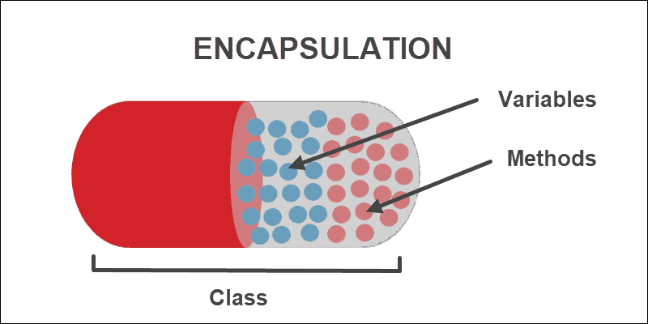

Object Oriented Programming
Contents
Object Oriented Programming¶
The terms - “monolithic”, “structural”, “procedural”, and “OOP” - refer to different paradigms or approaches in software development.
1 . Monolithic: Monolithic architecture is a traditional software development approach in which all the code is built as a single unit or module. This means that all the components of an application are tightly coupled together, making it difficult to modify and scale the application. Monolithic architecture is often used for small to medium-sized applications.
2 . Structural: Structural programming is a programming paradigm in which the focus is on breaking down a program into smaller, manageable parts. This is achieved by dividing the program into functions or procedures, each of which performs a specific task. The functions or procedures are then called in a specific order to accomplish the overall task. Structural programming is typically used for large-scale applications.
3 . Procedural: Procedural programming is a subset of structural programming in which the focus is on defining procedures that perform specific tasks. These procedures can be called from other parts of the program to accomplish the overall task. Procedural programming is often used for scientific and mathematical applications.
4. OOP (Object-Oriented Programming): OOP is a programming paradigm that focuses on objects rather than functions or procedures. An object is an instance of a class, which is a template that defines the properties and behaviors of the object. OOP is designed to make it easier to write and maintain large-scale applications by providing encapsulation, inheritance, and polymorphism. OOP is widely used for developing modern software applications, including web and mobile applications.
In summary, these terms represent different approaches to software development, with each having its strengths and weaknesses. Choosing the right approach depends on the specific requirements of the project.
Features of OOP¶


Class : its a blueprint of how something is built, what are the components, etc. (blueprint of a house)
Object : while “class” is blue print of the something, “object” is the actual instance of it. (physical house).
class Student: # creating class
Roll = 101
Name = 'Bob' # Data member
obj = Student() # creating objet
print('Roll number : ',obj.Roll)
print('Name is : ',obj.Name)
Roll number : 101
Name is : Bob
The init() Method (Constructor)¶
the __init __ method is a special method that is called when an object is created from a class. It is commonly used to initialize the attributes of the object.
The __init __ method is defined using the double underscore syntax (__init __) and takes at least one argument, conventionally named self. The self argument refers to the instance of the class that is being created.
Here is an example of a simple class that uses the __init __ method to initialize its attributes:
class Person:
def __init__(self, name, age): # __init__()
self.name = name
self.age = age
person1 = Person("Alice", 25)
print(person1.name,person1.age)
Alice 25
Class Method and self Object¶
A class method is a method that is bound to the class and not the instance of the class.
On the other hand, self is a reference to the instance of the class. It is used to access the attributes and methods of the instance.
class Fruit:
def __init__(self, name, color, taste):
self.name = name
self.color = color
self.taste = taste
def describe(self): # definition of class method
print(f"This is a {self.name}. It is {self.color} in color and tastes {self.taste}.")
fruit = Fruit("apple", "red", "sweet")
fruit.describe()
This is a apple. It is red in color and tastes sweet.
class methods are used to modify class-level attributes or perform some class-level operations, while self is used to access and modify instance-level attributes or perform some instance-level operations.
class variables and object variables¶
A class is a blueprint or a template for creating objects, and object variables are the variables that are defined within the object. A class variable, on the other hand, is a variable that is shared by all instances of a class.
Object variables are specific to the object they are defined in and can have different values for different instances of the class. These variables are also known as instance variables. Each object has its own copy of instance variables, and they can be accessed using the dot notation syntax with the object’s name.
For example:
class Person:
def __init__(self, name, age):
self.name = name
self.age = age
person1 = Person("John", 30)
person2 = Person("Jane", 25)
print(person1.name)
print(person2.age)
John
25
In this example, name and age are object variables defined within the Person class. When we create person1 and person2 objects of the Person class, each object gets its own copy of these variables.
A class variable, on the other hand, is defined within the class, but outside of any method. Class variables are shared by all instances of the class and can be accessed using the class name. Here is an example:
class Circle:
pi = 3.14
def __init__(self, radius):
self.radius = radius
def get_area(self):
return Circle.pi * self.radius ** 2
circle1 = Circle(5)
circle2 = Circle(7)
print(circle1.get_area()) # Output: 78.5
print(circle2.get_area()) # Output: 153.86
print(Circle.pi) # Output: 3.14
78.5
153.86
3.14
In this example, pi is a class variable defined within the Circle class. All instances of the Circle class can access this variable using Circle.pi.

public and private members¶
1 . Public Members¶
Public members are accessible to anyone who has an instance of the class. This means that the data and methods declared as public can be accessed and modified by code outside the class. This makes public members useful for things like getters and setters that are designed to provide external access to private data members, or for methods that need to be called by other classes.
2 . Private Members¶
Private members, on the other hand, are only accessible within the class itself. This means that the data and methods declared as private can only be accessed and modified by the class itself, and not by code outside the class. This makes private members useful for encapsulating the internal state of the object, as they cannot be modified or accessed by other classes or code outside the class.
For example:
class Person:
def __init__(self, name, age):
self.name = name # (public member)
self.__age = age # (private member with __(underscore) )
def get_age(self):
return self.__age
def set_age(self, age):
self.__age = age
In this example, we have defined a Person class that has two data members: name and __age. The name member is public, while the __age member is private.
We have also defined two methods get_age() and set_age() that allow external code to access and modify the __age member. These methods provide a controlled way of accessing and modifying the private data member __age.
Here’s an example of how we can create an instance of the Person class and use its public and private members:
person = Person("John", 30)
print(person.name) # Output: John
# Accessing the private member directly would result in an AttributeError
# print(person.__age)
# Instead, we can use the get_age() method to access the private member
print(person.get_age()) # Output: 30
# We can use the set_age() method to modify the private member
person.set_age(35)
print(person.get_age()) # Output: 35
John
30
35
Class Methods¶
In object-oriented programming, a class method is a method that is bound to the class and not the instance of the class. This means that class methods can be called on the class itself, rather than on an instance of the class.
To define a class method in Python, we use the @classmethod decorator before the method definition. The first argument of a class method is always a reference to the class itself, conventionally named cls.
Here’s an example of a simple class method in Python:
class MyClass:
x = 0
@classmethod
def increment_x(cls):
cls.x += 1
In this example, we have defined a MyClass class with a class variable x and a class method increment_x(). The increment_x() method takes the class itself as its first argument cls, and increments the value of the class variable x by 1.
We can call the increment_x() method on the class itself, like this:
print(MyClass.x) # Output: 0
MyClass.increment_x()
print(MyClass.x) # Output: 1
0
1
In this example, we can see that we can call the increment_x() method on the MyClass class itself, rather than on an instance of the class. This allows us to modify the class variable x directly, without needing to create an instance of the class first.
Class methods are often used to implement factory methods or other utility functions that operate on the class as a whole, rather than on individual instances of the class. They can also be useful for initializing or modifying class-level state, or for providing alternative constructors for the class.
Inheritance¶
In object-oriented programming (OOP) inheritance is used to create a hierarchy of classes where a child class (also known as a subclass) inherits attributes and methods from its parent class (also known as a superclass).
To define a subclass in Python, you use the class keyword followed by the name of the subclass, and in parentheses, the name of the superclass that you want to inherit from. Here is an example:
class Vehicle:
def __init__(self, car):
self.car = car
def my_car(self):
print('This is my', self.car)
class Transport(Vehicle):
def __init__(self, car, color, price):
super().__init__(car)
self.color = color
self.price = price
def my_car(self):
super().my_car()
print('Color of car is', self.color)
print('Price of car is', self.price)
s=Transport('Audi','black','50 lacks')
s.my_car()
#output:
# This is my Audi
# Color of car is black
# Price of car is 50 lacks
This is my Audi
Color of car is black
Price of car is 50 lacks
Polymarphism¶
Polymorphism is the ability of an object exist in many forms or shapes. Polymorphism allows different types of objects to be used interchangeably. This means that different classes can define methods with the same name or signature, and they can be called in a similar way regardless of the specific class instance that is used.
Here is an example:
class Animal:
def make_sound(self):
pass
class Dog(Animal):
def make_sound(self):
print("Woof!")
class Cat(Animal):
def make_sound(self):
print("Meow!")
def animal_sound(animal):
animal.make_sound()
dog = Dog()
cat = Cat()
animal_sound(dog) # Woof!
animal_sound(cat) # Meow!
Woof!
Meow!
Abstraction¶
Abstraction allows us to focus on the essential features of an object while ignoring the implementation details. Abstraction can be achieved through the use of abstract classes and abstract methods. An abstract class is a class that cannot be instantiated directly and serves as a template for other classes to inherit from. An abstract class can contain abstract methods, which are methods that have no implementation and must be defined by any concrete subclass.
Real life example : we hide details in ATM

import abc
class Shape(metaclass=abc.ABCMeta):
@abc.abstractmethod
def area(self):
pass
class Rectangle(Shape):
def __init__(self, width, height):
self.width = width
self.height = height
def area(self):
return self.width * self.height
rect = Rectangle(10, 20)
print(rect.area()) # Output: 200
200
Encapsulation¶
Encapsulation describes the idea of wrapping data and the methods that work on data within one unit. This puts restrictions on accessing variables and methods directly and can prevent the accidental modification of data. To prevent accidental change, an object’s variable can only be changed by an object’s method. Those types of variables are known as private variables.
Encapsulation can be achieved in Python by making the object’s attributes private, which means they can only be accessed and modified by the object’s methods. This is done by prefixing the attribute name with a double underscore “__”. For example, if we have a class named “Person” with a private attribute named “name”, we can access and modify it only through the class methods.

class Person:
def __init__(self, name):
self.__name = name
def get_name(self):
return self.__name
def set_name(self, name):
self.__name = name
p = Person("John")
print(p.get_name()) # Output: "John"
p.set_name("Mike")
print(p.get_name()) # Output: "Mike"
# print(p.__name) # This will give an AttributeError: 'Person' object has no attribute '__name'
John
Mike
Practice Questions¶
Difficulty Level : Easy¶
Q. Create a class named Display_Info that has 4 instance variables : name, age, hobby and favourite_colour and a method display that displays the instance variables in the same order. Also, make sure to display a message : Object Created Successfully! whenever an object is created.
Example :
class Display_Info(): ### your code here
di1 = Display_Info(‘Ai Adventures’,35,’Drawing’,’Red’)
di1.display()
Object Created Successfully!
Name of the Person : Ai Adventures
Age of the Person : 35
Hobby of the Person : Drawing
Favourite Colour of the Person : Red
## your code ##
Q. Create a class named Circle that has a constructor variable radius and 2 methods that calculate the area and the perimeter of the circle.
Example :
class Circle(): ### your code here
c1 = Circle(8)
c1.area()
‘Area of the Circle : 200.96’
c2 = Circle(17)
c2.perimeter()
‘Perimeter of the Circle : 106.76’
## your code ##
Q. Create a class named marks_calculation that has no constructor and no instance variables but has a method named percentage that takes input from the user for marks out of 100 for 5 subjects : ['English','Geometry','History','Science','Geography'] and stores them inside a dictionary with subject names as keys and marks as values. It is then stored as an instance variable marks, display this variable alongwith the percentage of the marks.
class marks_calculation(): ### your code here
m1 = marks_calculation()
m1.percentage()
Enter the marks for English out of 100 : 90
Enter the marks for Geometry out of 100 : 80
Enter the marks for History out of 100 : 70
Enter the marks for Science out of 100 : 60
Enter the marks for Geography out of 100 : 50
Percentage : 70.0
m1.marks
{‘English’: 90, ‘Geometry’: 80, ‘History’: 70, ‘Science’: 60, ‘Geography’: 50}
## your code ##
Q. Create a class named BankAccount that contains 2 initialization variables balance and min_balance = 1000. Value for balance variable is passed during object creation whereas min_balance is already defined inside the constructor. It should also contain 2 methods withdraw() and deposit() that takes an argument to add or reduce the balance. Account should maintain min_balance and should not drop the balance below it. Display the balance and appropriate messages after evey withdrawal and deposit.
Example :
class BankAccount(): ### your code here
b1 = BankAccount(3000)
b1.withdraw(2000)
Withdrawal successful! New Account Balance : ₹ 1000
b1.withdraw(500)
Withdrawal denied! Cannot let balance cross the min_balance limit! Account balance if this withdrawal is allowed : ₹ 500
b1.deposit(1000)
Deposit successful! New Account Balance : ₹ 2000
## your code ##
Q. Create a class called Animal with attributes name and “species”, and a method called make_sound() that prints a generic sound. Create a subclass called Dog that inherits from the Animal class and overrides the make_sound() method to print the sound Woof!. Create an object of the Dog class and call its make_sound() method.
## your code ##
Difficulty Level : Medium¶
Q. Create a class named Point that consists of 2 constructor variables x and y, 9 Dunder or Magic methods and a length method to carry out a varied range of operations assuming the constructor variables as x co-ordinate and y co-ordinate of a point respectively. Constructor of the class Point should display a message :** Point (x,y) created!** as well.
List of Dunder or Magic methods : [addition, subtraction, multiplication, true division, greater than, greater than equal to, less than, less than equal to, equal to equal to]
Note : Google about Dunder or Magic methods.
Example :
class Point: ### your code here
p1 = Point(10,5)
p2 = Point(5,10)
print(p1 + p2)
print(p1 - p2)
print(p1 * p2)
print(p1 / p2)
print(p1 > p2)
print(p1 >= p2)
print(p1 < p2)
print(p1 <= p2)
print(p1 == p2)
output:
Point (10,5) created!
Point (5,10) created!
(15, 15)
(5, -5)
100
(2.0, 0.5)
False
True
False
True
False
## your code ##
Q. Create a class named Course that has 1 default value constructor variable course = 'Machine Learning' and a method average_score that takes marks from the user for 5 tests, assigns it to a new constructor variable scores and calculates the average score of these marks. Create another class named student which has 2 instance variables name and age and inherits the Course class. It also contains a method display_info that displays a message using the attributes of Course class and student class, it also displays the average score using the average_score method of the Course class.
Note : Try using super keyword and without using super keyword.
Example :
class Course: ### your code here
s1 = student(‘Aiadventures’,35)
s1.display_info()
Output :
Aiadventures, age 35, has enrolled in Machine Learning course!
Enter the marks scored out of 10 : 8 9 7 10 6
Average Score of Aiadventures in Machine Learning course : 8.0
Difficulty Level : Hard¶
Q. Create an abstract class called Employee with abstract methods get_salary() and display_info(). Define two subclasses, Manager and Developer, that inherit from the Employee class. Implement the get_salary() and display_info() methods in each subclass to calculate and return the salary of a manager or a developer, and display their information, respectively. Create objects of the Manager and Developer classes and call their get_salary() and display_info() methods.
from abc import ABC, abstractmethod
class Employee(ABC): ### Your code
manager = Manager(“John Doe”, 40, 5000, 1000)
developer = Developer(“Jane Smith”, 30, 50, 160)
manager.display_info()
developer.display_info()
Name: John Doe
Age: 40
Salary: 6000
Name: Jane Smith
Age: 30
Salary: 8000
## your code ##
Q. Create a program that mimics a real-life SUPEROVER in cricket by creating a class named Team_Performance having no constructor but 3 constructor variables : team = {}, runs = [] and wickets = 0 defined in the only method play of the class. play is responsible for generating the scorecard and storing it inside team, runs and wickets are stored inside runs and wickets respectively. Another class named Superover inherits class Team_Performance that contains a constructor with 2 instance variables : team1 and team2 and displays a message “Let’s begin the Superover between team1 and team2!” whenever an object is created. It also contains a method begin that calls the play method twice, stores the scorecard, runs and wickets information for both the teams and displays the final ouput.
Note : Runs are calculated using random.randint(0,6) from random module.
Note : You will have to create new variables inside begin method. The aim of this question is to learn about the structure of code as well as deciding the number of variables and their usage.
Note : 0 is considered as wicket and 5 as run is not accepted.
Example :
class Team_Performance: ### your code here
match = Superover(‘A’,’B’) match.begin()
Let’s begin the Superover between A and B!
Performance of A : {‘B1’: 4, ‘B2’: 4, ‘B3’: 4, ‘B4’: 1, ‘B5’: 1, ‘B6’: 2}
Performance of B : {‘B1’: 2, ‘B2’: 3, ‘B3’: 2, ‘B4’: 6, ‘B5’: 0, ‘B6’: 2}
Scorecard of A : 16 / 0
Scorecard of B : 15 / 1
A wins by 1 runs!
Let’s begin the Superover between A and B!
Performance of A : {‘B1’: 6, ‘B2’: 1, ‘B3’: 0, ‘B4’: 1, ‘B5’: 1, ‘B6’: 6}
Performance of B : {‘B1’: 4, ‘B2’: 1, ‘B3’: 0, ‘B4’: 6, ‘B5’: 3, ‘B6’: 2}
Scorecard of A : 15 / 1
Scorecard of B : 16 / 1
B wins by 1 runs!
Let’s begin the Superover between A and B!
Performance of A : {‘B1’: 1, ‘B2’: 1, ‘B3’: 4, ‘B4’: 0, ‘B5’: 3, ‘B6’: 6}
Performance of B : {‘B1’: 4, ‘B2’: 0, ‘B3’: 2, ‘B4’: 1, ‘B5’: 2, ‘B6’: 6}
Scorecard of A : 15 / 1
Scorecard of B : 15 / 1
Its a Draw!
## your code ##